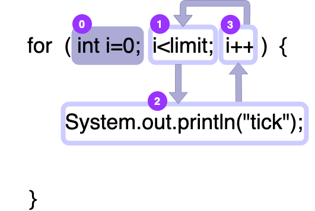
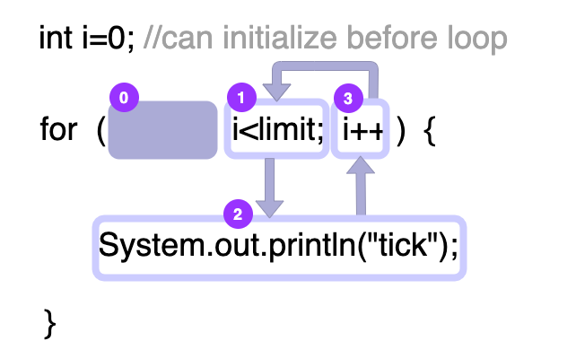
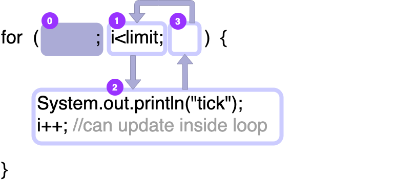
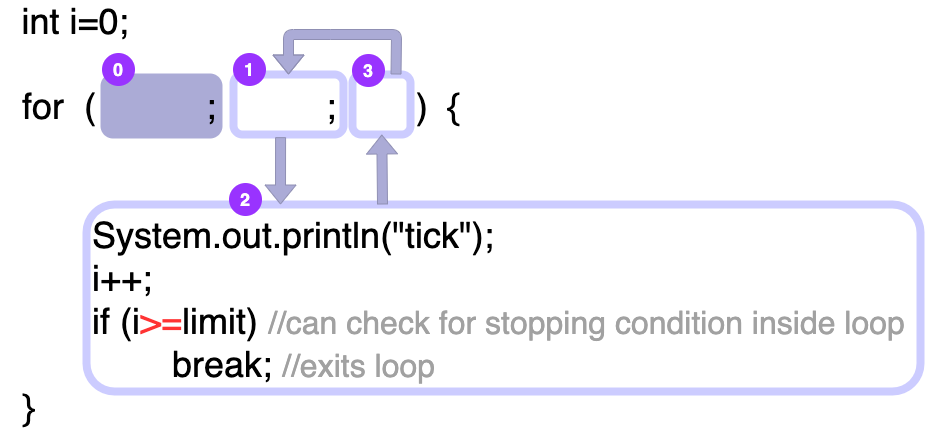
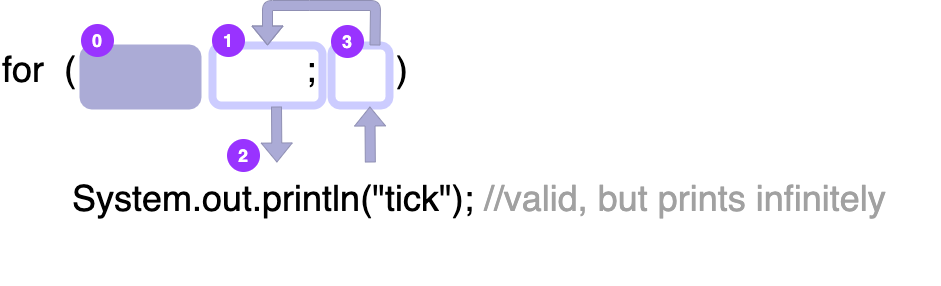
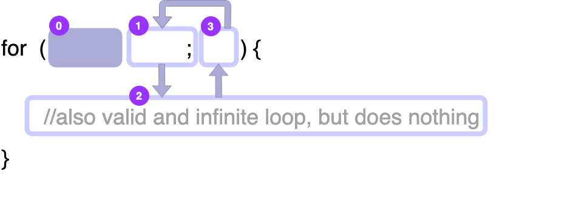
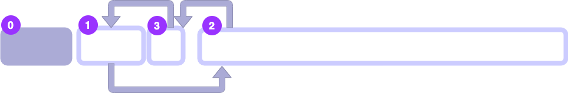

Chapter 1
Table of Contents
This is a work-in-progress. The order of
material is not the same as the order of material in lectures.
This is not an exhaustive resource.
The purpose of this document is not to teach you all the
material from scratch. It is intended as notes to help solidify
your understanding from doing the Review Questions, attending
lectures, and completing labs.
Introduction
Variables and Types
What is a variable?
A variable is a container for data. In the process of writing and running our programs, we will need to store and access values in order to perform computations on them. Just like in algebra, we can give a certain piece of data (e.g. a number, or a word, or even the steps to a recipe for flan) a name. Once we’ve defined a variable, we can access the value stored in that variable and modify it without having to remember what the value was.
If we didn’t have variables, we would have to keep track of the values ourself - this would mean that we would have to figure out how the value changes throughout our program in order to be able to use it. In that case, we wouldn’t need a computer at all because we would already know what the results are!
As the name implies, a variable
is something that can vary. Our code is a process
that takes some information as input and returns a
result. In this case, variables are the part of
our code that we might want to change each time we run
our code.
Identifiers
In Java, identifiers are legal names.
Identifiers must start with a letter (upper or lower
case) or an _ so that the Java compiler
doesn’t get confused. They also cannot have a
space in them, or the Java compiler will try to read
them as two different things! Identifiers may contain
any number of letters, digits, or _ after
the initial character.
Naming Conventions
There are conventions surrounding names in Java.
While your code will compile and run if you break these
conventions, other coders might get confused trying to
read your code if you do. Identifiers for classes and
interfaces should start with a capital letter.
Variables start with lowercase letters. All identifiers
should be descriptive, if possible, and you should only
use a single character identifier if the variable is
’temporary’. If a variable has multiple
words in it (e.g.
myReallyFunVariableName), then all words
after the first should start with a capital
letter1.
TODO Defining Variables
In order to define a variable, we need to give it a type and an identifier.
int bob; // define a variable named bob that will hold an integer. bob = 3; // set the value of bob to 3.
We can also assign our variable an initial value in the same line.
int bob = 3; // define an integer named bob and give it the value 3.
If we wanted to modify the value of
bob, we can do it like this:
bob = bob + 3; // add 3 to the existing value of bob
If we want to replace the value of bob,
we can do it like this:
bob = 23; // forget the old value of bob and replace it with 23.
We can even use variables to modify or replace other variables!
int alice = 5; int bob = 3; alice = alice - bob; // the subtract the value of bob from the value of alice. // alice now contains 2. alice = bob; // replace the value of alice with the value of bob. alice now // contains 3.
What is a type?
Java is a strongly typed language. This means
you need to explicitly tell the Java compiler what kind
of data will be stored in a variable. In much the same
way as the letter O and the digit
0 can be indistinguishable in written text
unless you know specifically that you are dealing with
words or numbers, Java can’t make sense of a
variable unless it knows how to interpret it.
At the lowest level, all information in
a program is stored as a binary sequence of bits,
which are either 0 or 1. Bits are
stored in collections of 8 to make up bytes. The
letter ``A“ is represented as
01000001, but so is the number
65! In order to avoid confusion, Java
requires a specific type to be associated with each
variable. You can think of the type as a `decoder-ring’ to
match the `binary encoding2’
Basic Types
We will start with three basic types.
-
int: An integer is a whole number (e.g. 1, 2, 42…)- Can store values from approximately -2,000,000,000 to 2,000,000,000
- Larger magnitudes can be stored in a
type called
long.
-
double: A double is a decimal number.- Stands for ``double-precision floating point“
- Represents scientific notation and can store up to 15 significant digits
- Is approximately double the precision of a
floattype.
-
char: A character, such as a letter, number, or symbol.- Certain characters, such as a
newlineor atabhave special `escaped’ representations - The binary encoding of the letter `a’ is the same as the encoding of 65, `b’ is the same as 66, and `A’ is 92.
- A
chartype is denoted by single quotes'in Java.
- Certain characters, such as a
-
String: A string of characters.- Note the capital
SinString - Can be as long as your computer has space for
- A
Stringtype is denoted by double quotes"in Java.
- Note the capital
Casting
Some types can be cast to each other. For
example, an double type can store an
int. If we wanted to represent the integer
3 as a double, we could
simply write 3.0. However, we can’t
go back in the opposite direction.
int myVariable = 19; // stores the number 19 in my variable double myDoubleVariable = 19.2; // stores the number 19.2 in myDoubleVariable double myPromotedVariable = 19; // stores the number 19.0 in myPromotedVariable
When we assign an integer to a double, Java automatically promotes it to a decimal. However, if we tried to assign a double to an integer, Java would complain about a loss of precision. Java doesn’t know what your actual intention is when it comes to how you use your variables, but it won’t let you accidentally lose information. if you want to assign a double to an integer, you’ll have to do it explicitly:
int myDownCastInt = (int)19.3; // Casts 19.3 to an integer by dropping the .3 // portion and assigns it to myDownCastInt
Note that when we cast a double to an
int, we discard the decimal portion.
TODO Primitive Types vs Reference Types
Expressions (and Types)
TODO Expressions
An expression in Java is something that can be evaluated. Expressions alone aren’t always valid lines of Java code, but being able to break up the evalution of code is very useful.
(12 * 10) // an expression multiplying 2 and 10 (2 + num) // add num to 2
When evaluating an expression, you should keep track of the type. For example:
int whole = 2; double decimal = whole*2.0; // whole * 2.0 is an expression which evaluates to a double
In the code above, we multiply an double
by an int, which Java automatically
transforms into a double for us.
TODO Basic arithmetic
Our basic arithmetic operations work in Java:
+-*/. As expected, a + b adds
a and b together while a
- b subtracts b from a.
If we mix int and double types
when it comes to operations, we always get back a
double because Java doesn’t want to
throw away precision without your permission.
Integer Division
int factor = multiple / divisor;
In the above code, factor is the
integer resulting from dividing multiple
by divisor. This is all well and good when
factor * divisor is equal to
multiple.
But what happens when it isn’t?
int multiple = 13; int divisor = 3; int factor = multiple / divisor; // 3 leaves a remainder of 1 when dividing 13.
Remember how when we cast a double to
an int, we discard the decimal portion? We
are doing a similar thing here. We can’t express
13/3 exactly in integers, so we will
discard the remainder. Our result, stored in
factor will be 4, because
4*3 is 12, which is as close
as we can get to 13 without going
over.
If we want to find the remainder, we can use the
modulo operator, %.
int result = (multiple / divisor) + (multiple % divisor)
In this case, result is equal to
13, because (multiple %
divisor) is 1, the remainder after
dividing 13 by 33.
Calling Functions
Running a Program
Scanners!
Control Flow
For Loops
Repeating Commands
A loop in Java is a way of repeating a sequence of commands without having to type it out multiple times. For example, if I wanted to print “tick” 5 times, I could do the following:
System.out.println("tick"); System.out.println("tick"); System.out.println("tick"); System.out.println("tick"); System.out.println("tick");
Of course, I don’t want to do that. What if I wanted to do it 100 times instead? Or 1000?4 Copy/pasting the line repeatedly would not be very fun at all. You might almost want to… write a program to do it for you!
Enter the for loop.
// Lets print "tick" 5 times! for (int i = 0; i < 5; i++) { System.out.println("tick"); }
We immediately recognize int i = 0; as
a way of defining a new integer variable with the value
0. i < 5 is our condition, and
i++ tells us how we get from our starting
state to our condition.
- The loop variable ’governs’ our loop.
In this case, our variable is
i. initializersets the starting value for the loop variable. Here, our initializer isint i = 0;.conditiontells us whether we should continue executing the loop. We plan to stop ati > 5in this loop.updatetells us how the variable should change at the end of each iteration. We are increasing the value ofiby1usingi++.
Lets break this loop down a little bit.
// We could use an integer that already exists, if we wanted to! int i = 0; for (; i < 5; i++) { System.out.println("tick"); }
What if I want to go backwards?
int i = 5; for (; i > 0; i--) { System.out.println("kcit"); }
What if you have oudenophobia5 and really want to avoid using the
number 0 in your code?
// we don't have to start at 0! int i = 3214; for (; i < 3219; i++) { System.out.println("tick"); }
Wait… how does that work? 3219 has nothing to
do with 5. Or does it?6 If you
read the footnote at this point, you’ll know that
3219-3214=5, which is vital information for relating
the above for loop to the number 5.
Ok. So we are starting with some value for
i and we are stopping when the
condition is no longer true. In the cases
we’ve been looking at so far, the
condition
So what if I wanted to do that 100 times now? Do I
just repeat that for loop (counts quietly for a
second) 20 times? No. Of course not. We just change
the value that i is counting up to.
Deconstructing a for loop (illustrated)

Figure 1: A for loop, broken down. All diagrams courtesy of Prof Kazakova.
Steps:
0. Create an integer called i and set its
value to 0.
1. Check if i < limit. If it is,
continue to 2. If not, exit the loop.
2. Execute the body of the loop.
tick.
3. update i. Here, we are adding 1 to
i.
1. check if i < limit. If it is,
continue to 2. If not, exit the loop.
Remember, we can pull the initializer out of the
for loop declaration: 
And then the update can happen inside the loop body: 
We can even take the condition out of the for loop
by using a special break statement to exit
from the loop when we are done: 
If we dont have a condition at all, then we go on forever… 
What if we just did NOTHING forever? 
We could do nothing forever in even fewer characters! Maximize laziness! 
-
Thoughts on
visualizing and understanding for loops
Between the initializer and the condition we are defining a range of values for
ito fall into. The update tells us howiwill move through that range. One way to think about for loops is to draw a number line with the initial value of your loop variable, or the start, and the value implied by your condition, or the finish. You can then count how many times you would have to use the update function to get from the start to the finish. Relate that back to the counting exercises we did when we started clicker questions on for loops.
If Statements
Footnotes:
We will learn more about classes and interfaces later. An outline of basic conventions can be found here.
An encoding is a predefined convention to represent something. For example, the text you are reading on your screen right now are an encoding of the words they represent. In computer science, we encode everything in a binary format of 1s and 0s.
This seems to contradict the earlier assertion, that Java won’t throw away your precision without your permission. However, there’s more at work here. Computer science extends from a branch of mathematics called Discrete Math, where everything is an integer. Much of the math that determines what can and cannot be computed relies on integer-only math.
I am fully aware that a program that just says “tick” 1000 times is neither exciting to a user nor your goal as a programmer.
ouden is Greek for nothing, or literally, not one.
Very related to 5 in this context. 3219-3214=5.